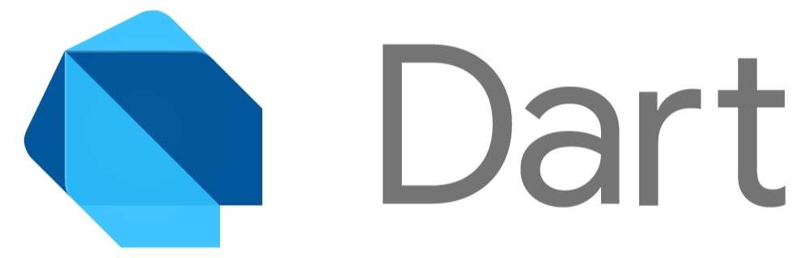

Introduction
Présentation
Plan (ébauche)
- D'où vient Flutter ?
- Le SDK flutter et l'environnement
- widget (layouts et widgets de base)
- material/cupertino
- les widgets avancés
- Rive
- la gestion d’état
- les channels
- gRPC (pas vraiment lié à flutter, mais faisant partie de l’écosystème google ça peut être intéressant)
- flutter web et flutter desktop
- L’environnement de test
- les limites de flutter
Planning
% TODO Date
1er jour
2ème jour
3ème jour
Flutter
L'objectif ici sera de découvrir Flutter.
Dart
Un langage multi-plateforme

Initialement créé par les équipes de Google, Dart est un langage objet censé remplacer javascript. C'est un langage optimisé pour du traitement client et doté d'un ramasse-miette (garbage collector), conçu pour être accessible par des développeurs familiarisés avec la Programmation Orientée Objet comme Java, Javascript ou C#.
Le principal avantage du langage Dart, c'est avant tout sa plateforme sur laquelle il est exécuté.
Il existe trois modes de compilation.
- Stand-alone : exécuter du code Dart interprété par la Dart Virtual Machine ou DVM (à la manière de la Java Virtual Machine). Pour utiliser ce mode, il faut configurer son environnement via le Software Development Kit (SDK). Le SDK comprend :
- pub : un gestionnaire de dépendances
- dart2js : un transpilateur vers du code javascript
- dartdoc : un générateur de documentation Dart
- dartfmt : un formateur de code qui respecte les conventions officielles de code
- AOT (Ahead Of Time) : compilation d'un code haut niveau vers un code machine binaire. La DVM n’est alors pas nécessaire.
- Flutter: iOS, android
- dart2native : windows, macOS, linux
- Flutter: iOS, android
- Web : grâce à dart2js, du code Dart peut être transpilé en code javascript afin d’être exécuté dans un environnement web.
Un langage flexible
Une des principales forces du langage Dart, c’est, d’une part sa capacité à cibler des plateformes diverses (partie déploiement), mais également à s’intégrer dans le contexte d'un environnement de développement « moderne ».
Flutter
Le mode Just In Time (JIT) permet d’effectuer une compilation à la volée et cela pendant que le programme est en cours d’exécution. En combinant le mode JIT et la DVM, on est capable de changer dynamiquement du code et de l’exécuter à la volée. Il est alors possible d’exécuter et de débugger du code, et cela quelle que soit l’architecture ciblée.
Web
Le compilateur de développement Dart nommé le dartdevc permet d’exécuter et de débugger des applications web Dart sur Google Chrome.
Un peu d'histoire

Dart fut créé par Lars Bak et Kasper Lund en 2011, tous deux ingénieurs travaillant chez Google. Le langage reçu un accueil mitigé de la part de la communauté web. Google proposa d’inclure la Dart Virtual Machine dans chrome et par là même, de supprimer à terme le javascript.
Comme on pouvait s’y attendre, la communauté perçue Dart comme un langage imposé par Google et pouvant nuire à l’aspect libre et communautaire du web.
Entre autres, cela allait conduire à une fragmentation de l’écosystème.
La première version de Dart voit le jour en 2013.
Jusqu’en 2015, Google utilise Dart pour ses projets internes et l’adoption du langage par la communauté reste faible. En parallèle, les équipes de Google travaillent sur la deuxième version d’Angular complètement écrite en Dart et l’utilisent sur des projets internes aujourd’hui toujours en production comme Google Ads, Google Absence, Google Fiber, Google Play Console ...
En 2015, les équipes de développement de Dart sortent alors la version 1.9 du langage qui apporte le support de la transpilation vers javascript ainsi que la première version d’Angular Dart. La version typescript d’Angular sortira un an plus tard et l’adoption par la communauté fut un succès.
En parallèle, lors d’un Dart Developer Submit, Éric Seidel de chez Google présente 1 Sky une ébauche du moteur graphique aujourd’hui connu sous le nom de Skia 2 (utilisé sous Android, Google Chrome, Firefox, Fuchsia 3). Éric présente une démonstration codée en Dart qui tourne sur un mobile android ou iOS en 120 fps. Il présente la notion de widget et de hot-reload.
C’est la première apparition de Flutter.
En 2017, sort la première version alpha de Flutter. Google fait intervenir les équipes de développement de Chromium sur le projet. Un des prérequis pour cette équipe, est de procéder à une mise à jour majeure du langage : Dart 2.0. Ce dernier apporte un système de typage renforcé, nécessaire pour pouvoir compiler dart vers un environnement natif.
La version définitive de Flutter sort en 2018. L’engouement autour de ce dernier est réel.
La communauté de développeur Flutter est issue d’un écosystème assez varié : Kotlin / Swift / Javascript / Typescript. Le langage ayant assez peu évolué depuis sa première version (en dehors des aspects techniques), et la communauté grandissante, des demandes d’évolution du langage sont fréquentes.
En 2019, Dart supporte désormais les extensions issues de Kotlin, et de nombreuses fonctionnalités expérimentales font leurs apparitions comme Null Safety, Dart FFI (Dart Foreign Function Interface) et gRPC (Google Remote Procedure Call).
À cela s’ajoute l’apparition de dart2native permettant de générer des exécutables sur des plateformes desktop. Google annonce alors l’arrivée de Flutter Desktop et Flutter Web.
Nécessitant un travail titanesque, les fonctionnalités de Null Safety et Dart FFI sont disponibles en version définitive courant 2021.
3: Fuchsia, le nouvel OS créé par Google
Flutter
Comment fonctionne Flutter ?
Flutter est un kit de développement logiciel destiné à réaliser des interfaces.
Dans un premier temps, représentons basiquement le fonctionnement d’une application native iOS/Android.
Nous pouvons distinguer deux parties, l’application compilée en binaire pour une plateforme cible qui interagit avec des composants et API fournis par le système d’exploitation. Une application multiplateforme ne peut, par définition, pas utiliser directement les composants natifs.
Une façon de résoudre ce problème aujourd’hui bien connue, est d’utiliser un bridge (pont) à la manière de React Native.
Le bridge expose une abstraction des composants et API commune aux différentes plateformes. On manipule ainsi des composants génériques qui sont traduits par le bridge en composants natifs. Ainsi, il suffit d’une base de code pour cibler plusieurs plateformes.
Cette solution a cependant quelques inconvénients, comme la nécessité d’être exécuté au runtime et par la-même d’affecter la performance de l’application.
Flutter a choisi une approche radicalement différente afin d’optimiser les performances.
Plutôt que de traduire des composants multiplateformes en composants natifs, Flutter redessine tous les composants grâce au moteur SKIA. Un peu à la manière d’un moteur de jeu-vidéo comme Unity, cela va permettre de porter plus facilement l’application sur plusieurs plateformes. Il n’y a presque plus de dépendances aux composants natifs. « Presque » car cela ne concerne que les composants natifs graphiques. Il faut bien interagir également avec les API systèmes (géolocalisation, caméra…). C’est rendu possible grâce aux Platform Channels.
Pourquoi Dart ?
- Programmation orientée objet : elle est connue et appropriée pour les patterns de programmation de composants graphiques
- Performances : Dart possède un allocateur de mémoire performant et optimisé pour les données ayant un court cycle de vie
- Productivité : Dart est un langage qualifié de « haut niveau » et simple à appréhender
- Google : Dart et Flutter sont développés par Google, ce qui laisse à ce dernier toute la liberté qu’il souhaite pour faire évoluer le framework
Pour commencer
Nous allons réaliser notre première application Flutter.
Configuration
Installation
SDK Flutter
- Installer le SDK Flutter Il comprend également le SDK Dart. Se référer à la documentation Flutter pour procéder à l’installation :
- Exécuter la commande suivante pour vérifier l’état de l’installation de l’environnement de développement.
flutter doctor
La commande flutter doctor va lister les status de tous les composants présents sur le système d’exploitation comme les outils de développement Android et iOS, mais également les IDE comme Xcode, VSCode et IntelliJ.
Toolchains
- Installer les toolchains si nécessaire
Si la toolchain android ou iOS n’est pas bien configurée, suivre les indications données par la commande flutter doctor(veuillez-vous référer à la documentation d’installation).
Choix de l’IDE
Il est possible de développer une application Flutter avec 3 IDE au choix :
VSCode
Si vous êtes familiarisé avec cet éditeur, l’environnement Flutter y est pleinement intégré.
- Configurer VSCode pour Flutter
Se référer à la documentation.
Android Studio/ IntelliJ
Au contraire, si vous préférez la suite IntelliJ, l’environnement Flutter est également disponible.
- Configurer Android Studio / IntelliJ pour Flutter
Se référer à la documentation.
Emacs
Pour les plus téméraires, il est possible d’utiliser Emacs.
- Configurer Emacs pour Flutter
Se référer à la documentation.
Le traditionnel Hello World
- Créer un projet dart à l’aide de la commande
dart create -t console-simple hello-world.
Cela va générer un dossier avec la structure suivante :
hello-world
├─ bin
│ └─ hello_world.dart # Fichier source / point d'entrée principal de l'application
├─ CHANGELOG.md
├─ README.md
├─ analysis_options.yaml # Configuration de l'analyse statique dart
├─ pubspec.lock # Fichier de verrouillage de résolution des dépendances
└─ pubspec.yaml # Fichier de configuration de l'application dart
Prenons le fichier hello_world.dart. Il contient une fonction appelée main prenant une liste d’arguments en paramètre. Cette fonction est le point d’entrée de l’application.
// hello_world.dart
void main(List<String> arguments) {
print('Hello world!');
}
Dans le fichier pubspec.yaml, on renseigne les métadonnées nécessaires à l'application dart.
name: hello_world
description: A simple command-line application.
version: 1.0.0
# homepage: https://www.example.com
environment:
sdk: '>=2.14.1 <3.0.0'
# dependencies:
# path: ^1.8.0
dev_dependencies:
lints: ^1.0.0
- Exécuter le programme avec la commande
dart run
Solution
hello-world % dart run
Hello world!
PUB
PUB est le gestionnaire de paquet officiel de l’écosystème dart.
Il est fourni par défaut avec le SDK Dart / Flutter.
Configuration
Tout projet Dart doit avoir un fichier **pubspec.yaml **. On y définit l’ensemble des métadonnées nécessaires au fonctionnement du programme Dart. Voici la liste des champs possibles de manière exhaustive : Pubspec.
name: hello_world
description: A simple command-line application.
version: 1.0.0
# homepage: https://www.example.com
environment:
sdk: '>=2.14.1 <3.0.0'
dependencies:
path: ^1.8.0
dev_dependencies:
lints: ^1.0.0
CLI
Il est possible d’utiliser pub en ligne de commande. Il faut distinguer une dépendance flutter d’une dépendance dart.
dart pub <command>
flutter pub <command>
Pour ajouter une dépendance : pub add <dep>
Pour supprimer une dépendance : pub remove <dep>
Pour installer les dépendances définies dans un fichier pubspec : pub get
Pour mettre à jour les dépendances : pub upgrade
Pour lister les dépendances obsolètes : pub outdated
Pour lister les dépendances : pub deps
Ne pas hésiter à se référer à la documentation officielle.
Bibliothèque en ligne
Les bibliothèques disponibles pour l’écosystème dart sont disponibles sur pub.dev.
Aide au choix de bibliothèques sur pub.dev
- La bibliothèque est taguée « Flutter Favorite »
- Les plateformes cherchées sont supportées
- Compatible « Null Safety »
- Likes + Popularity
- License d’utilisation
Quelques licenses open-sources
Source: Journal du net
| Nom | Type | Avantages | Contraintes |
|---|---|---|---|
| GNU General Public License (GPL) | Copyleft | C'est la plus populaire et la plus connue par les développeurs | Licence contaminante : tout logiciel embarquant du code GNU GPL devient GNU GPL |
| MIT | Non copyleft | Licence très permissive | S'applique plus particulièrement aux petits programmes |
| BSD | Non copyleft | License permissive, avec un minimum de restrictions | Ne pas utiliser la licence BSD originale qui contenait une clause de publicité aujourd'hui retirée |
| Apache | Non copyleft | Initialement destinée aux packages Apache, elle est aujourd'hui très populaire. Elle est permissive | N'est pas compatible avec la GNU GPL 2 |
Première application Flutter
- Créer un projet dart à l’aide de la commande
flutter create flutter_hello_world.
Solution
```exercices % flutter create flutter_hello_world
Creating project flutter_hello_world...
flutter_hello_world/test/widget_test.dart (created)
flutter_hello_world/pubspec.yaml (created)
flutter_hello_world/README.md (created)
flutter_hello_world/lib/main.dart (created)
flutter_hello_world/windows/runner/flutter_window.cpp (created)
flutter_hello_world/windows/runner/utils.h (created)
flutter_hello_world/windows/runner/utils.cpp (created)
flutter_hello_world/windows/runner/runner.exe.manifest (created)
flutter_hello_world/windows/runner/CMakeLists.txt (created)
flutter_hello_world/windows/runner/win32_window.h (created)
flutter_hello_world/windows/runner/Runner.rc (created)
flutter_hello_world/windows/runner/win32_window.cpp (created)
flutter_hello_world/windows/runner/resources/app_icon.ico (created)
flutter_hello_world/windows/runner/main.cpp (created)
flutter_hello_world/windows/runner/resource.h (created)
flutter_hello_world/windows/runner/flutter_window.h (created)
flutter_hello_world/windows/flutter/CMakeLists.txt (created)
flutter_hello_world/windows/.gitignore (created)
flutter_hello_world/windows/CMakeLists.txt (created)
flutter_hello_world/ios/Runner.xcworkspace/contents.xcworkspacedata (created)
flutter_hello_world/ios/Runner.xcworkspace/xcshareddata/IDEWorkspaceChecks.pli
st (created)
flutter_hello_world/ios/Runner.xcworkspace/xcshareddata/WorkspaceSettings.xcse
ttings (created)
flutter_hello_world/ios/Runner/Info.plist (created)
flutter_hello_world/ios/Runner/Assets.xcassets/LaunchImage.imageset/LaunchImag
e@2x.png (created)
flutter_hello_world/ios/Runner/Assets.xcassets/LaunchImage.imageset/LaunchImag
e@3x.png (created)
flutter_hello_world/ios/Runner/Assets.xcassets/LaunchImage.imageset/README.md
(created)
flutter_hello_world/ios/Runner/Assets.xcassets/LaunchImage.imageset/Contents.j
son (created)
flutter_hello_world/ios/Runner/Assets.xcassets/LaunchImage.imageset/LaunchImag
e.png (created)
flutter_hello_world/ios/Runner/Assets.xcassets/AppIcon.appiconset/Icon-App-76x
76@2x.png (created)
flutter_hello_world/ios/Runner/Assets.xcassets/AppIcon.appiconset/Icon-App-29x
29@1x.png (created)
flutter_hello_world/ios/Runner/Assets.xcassets/AppIcon.appiconset/Icon-App-40x
40@1x.png (created)
flutter_hello_world/ios/Runner/Assets.xcassets/AppIcon.appiconset/Icon-App-20x
20@1x.png (created)
flutter_hello_world/ios/Runner/Assets.xcassets/AppIcon.appiconset/Icon-App-102
4x1024@1x.png (created)
flutter_hello_world/ios/Runner/Assets.xcassets/AppIcon.appiconset/Icon-App-83.
5x83.5@2x.png (created)
flutter_hello_world/ios/Runner/Assets.xcassets/AppIcon.appiconset/Icon-App-20x
20@3x.png (created)
flutter_hello_world/ios/Runner/Assets.xcassets/AppIcon.appiconset/Contents.jso
n (created)
flutter_hello_world/ios/Runner/Assets.xcassets/AppIcon.appiconset/Icon-App-20x
20@2x.png (created)
flutter_hello_world/ios/Runner/Assets.xcassets/AppIcon.appiconset/Icon-App-29x
29@3x.png (created)
flutter_hello_world/ios/Runner/Assets.xcassets/AppIcon.appiconset/Icon-App-40x
40@2x.png (created)
flutter_hello_world/ios/Runner/Assets.xcassets/AppIcon.appiconset/Icon-App-60x
60@3x.png (created)
flutter_hello_world/ios/Runner/Assets.xcassets/AppIcon.appiconset/Icon-App-60x
60@2x.png (created)
flutter_hello_world/ios/Runner/Assets.xcassets/AppIcon.appiconset/Icon-App-76x
76@1x.png (created)
flutter_hello_world/ios/Runner/Assets.xcassets/AppIcon.appiconset/Icon-App-40x
40@3x.png (created)
flutter_hello_world/ios/Runner/Assets.xcassets/AppIcon.appiconset/Icon-App-29x
29@2x.png (created)
flutter_hello_world/ios/Runner/Base.lproj/LaunchScreen.storyboard (created)
flutter_hello_world/ios/Runner/Base.lproj/Main.storyboard (created)
flutter_hello_world/ios/Runner.xcodeproj/project.xcworkspace/contents.xcworksp
acedata (created)
flutter_hello_world/ios/Runner.xcodeproj/project.xcworkspace/xcshareddata/IDEW
orkspaceChecks.plist (created)
flutter_hello_world/ios/Runner.xcodeproj/project.xcworkspace/xcshareddata/Work
spaceSettings.xcsettings (created)
flutter_hello_world/ios/Runner.xcodeproj/xcshareddata/xcschemes/Runner.xcschem
e (created)
flutter_hello_world/ios/Flutter/Debug.xcconfig (created)
flutter_hello_world/ios/Flutter/Release.xcconfig (created)
flutter_hello_world/ios/Flutter/AppFrameworkInfo.plist (created)
flutter_hello_world/ios/.gitignore (created)
flutter_hello_world/flutter_hello_world.iml (created)
flutter_hello_world/.gitignore (created)
flutter_hello_world/web/favicon.png (created)
flutter_hello_world/web/index.html (created)
flutter_hello_world/web/manifest.json (created)
flutter_hello_world/web/icons/Icon-maskable-512.png (created)
flutter_hello_world/web/icons/Icon-192.png (created)
flutter_hello_world/web/icons/Icon-maskable-192.png (created)
flutter_hello_world/web/icons/Icon-512.png (created)
flutter_hello_world/.metadata (created)
flutter_hello_world/macos/Runner.xcworkspace/contents.xcworkspacedata
(created)
flutter_hello_world/macos/Runner.xcworkspace/xcshareddata/IDEWorkspaceChecks.p
list (created)
flutter_hello_world/macos/Runner/Assets.xcassets/AppIcon.appiconset/app_icon_1
6.png (created)
flutter_hello_world/macos/Runner/Assets.xcassets/AppIcon.appiconset/app_icon_1
024.png (created)
flutter_hello_world/macos/Runner/Assets.xcassets/AppIcon.appiconset/app_icon_2
56.png (created)
flutter_hello_world/macos/Runner/Assets.xcassets/AppIcon.appiconset/app_icon_6
4.png (created)
flutter_hello_world/macos/Runner/Assets.xcassets/AppIcon.appiconset/app_icon_5
12.png (created)
flutter_hello_world/macos/Runner/Assets.xcassets/AppIcon.appiconset/app_icon_1
28.png (created)
flutter_hello_world/macos/Runner/Assets.xcassets/AppIcon.appiconset/Contents.j
son (created)
flutter_hello_world/macos/Runner/Assets.xcassets/AppIcon.appiconset/app_icon_3
2.png (created)
flutter_hello_world/macos/Runner/DebugProfile.entitlements (created)
flutter_hello_world/macos/Runner/Base.lproj/MainMenu.xib (created)
flutter_hello_world/macos/Runner/MainFlutterWindow.swift (created)
flutter_hello_world/macos/Runner/Configs/Debug.xcconfig (created)
flutter_hello_world/macos/Runner/Configs/Release.xcconfig (created)
flutter_hello_world/macos/Runner/Configs/Warnings.xcconfig (created)
flutter_hello_world/macos/Runner/Configs/AppInfo.xcconfig (created)
flutter_hello_world/macos/Runner/AppDelegate.swift (created)
flutter_hello_world/macos/Runner/Info.plist (created)
flutter_hello_world/macos/Runner/Release.entitlements (created)
flutter_hello_world/macos/Runner.xcodeproj/project.xcworkspace/xcshareddata/ID
EWorkspaceChecks.plist (created)
flutter_hello_world/macos/Runner.xcodeproj/project.pbxproj (created)
flutter_hello_world/macos/Runner.xcodeproj/xcshareddata/xcschemes/Runner.xcsch
eme (created)
flutter_hello_world/macos/Flutter/Flutter-Debug.xcconfig (created)
flutter_hello_world/macos/Flutter/Flutter-Release.xcconfig (created)
flutter_hello_world/macos/.gitignore (created)
flutter_hello_world/android/app/src/profile/AndroidManifest.xml (created)
flutter_hello_world/android/app/src/main/res/mipmap-mdpi/ic_launcher.png
(created)
flutter_hello_world/android/app/src/main/res/mipmap-hdpi/ic_launcher.png
(created)
flutter_hello_world/android/app/src/main/res/drawable/launch_background.xml
(created)
flutter_hello_world/android/app/src/main/res/mipmap-xxxhdpi/ic_launcher.png
(created)
flutter_hello_world/android/app/src/main/res/mipmap-xxhdpi/ic_launcher.png
(created)
flutter_hello_world/android/app/src/main/res/values-night/styles.xml (created)
flutter_hello_world/android/app/src/main/res/values/styles.xml (created)
flutter_hello_world/android/app/src/main/res/drawable-v21/launch_background.xm
l (created)
flutter_hello_world/android/app/src/main/res/mipmap-xhdpi/ic_launcher.png
(created)
flutter_hello_world/android/app/src/main/AndroidManifest.xml (created)
flutter_hello_world/android/app/src/debug/AndroidManifest.xml (created)
flutter_hello_world/android/gradle/wrapper/gradle-wrapper.properties (created)
flutter_hello_world/android/gradle.properties (created)
flutter_hello_world/android/.gitignore (created)
flutter_hello_world/android/settings.gradle (created)
flutter_hello_world/android/app/build.gradle (created)
flutter_hello_world/android/app/src/main/kotlin/com/example/flutter_hello_worl
d/MainActivity.kt (created)
flutter_hello_world/android/build.gradle (created)
flutter_hello_world/android/flutter_hello_world_android.iml (created)
flutter_hello_world/ios/Runner/Runner-Bridging-Header.h (created)
flutter_hello_world/ios/Runner/AppDelegate.swift (created)
flutter_hello_world/ios/Runner.xcodeproj/project.pbxproj (created)
flutter_hello_world/analysis_options.yaml (created)
flutter_hello_world/.idea/runConfigurations/main_dart.xml (created)
flutter_hello_world/.idea/libraries/Dart_SDK.xml (created)
flutter_hello_world/.idea/libraries/KotlinJavaRuntime.xml (created)
flutter_hello_world/.idea/modules.xml (created)
flutter_hello_world/.idea/workspace.xml (created)
flutter_hello_world/linux/main.cc (created)
flutter_hello_world/linux/my_application.h (created)
flutter_hello_world/linux/my_application.cc (created)
flutter_hello_world/linux/flutter/CMakeLists.txt (created)
flutter_hello_world/linux/.gitignore (created)
flutter_hello_world/linux/CMakeLists.txt (created)
Running "flutter pub get" in flutter_hello_world... 1 162ms
Wrote 128 files.
All done!
In order to run your application, type:
$ cd flutter_hello_world
$ flutter run
Your application code is in flutter_hello_world/lib/main.dart.
Désormais, examinons la structure du projet.
flutter_hello_world/
┣ .dart_tool/
┣ .idea/
┣ android/ # Android project
┣ ios/ # iOS project
┣ lib/ # Flutter sources
┣ test/ # Test folder
┣ .gitignore
┣ .metadata
┣ .packages
┣ README.md
┣ analysis_options.yaml
┣ flutter_hello_world.iml
┣ pubspec.lock
┗ pubspec.yaml
Par rapport à un projet dart, on observe l’ajout de deux dossiers supplémentaires ios,android, chacun contenant respectivement les sources d’un véritable projet iOS/Android. Les sources spécifiques à chaque plateforme sont accessibles et peuvent être éditées (configuration du splashcreen, icônes, permissions, …).
- Ouvrir le fichier
main.dartsitué dans le dossierlib
import 'package:flutter/material.dart';
void main() {
runApp(const MyApp());
}
Comme tout programme dart, la méthode main est déclarée.
Celle-ci appelle la méthode runApp provenant du package flutter/material.dart et servant à afficher à l’écran le widget passé en paramètre.
- Exécuter l’application sur la plateforme de son choix à l’aide de la commande
flutter runou à l’aide de l’IDE
- Supprimer tout le contenu du fichier
main.dartet le remplacer par le contenu suivant :
// Copyright 2018 The Flutter team. All rights reserved.
// Use of this source code is governed by a BSD-style license that can be
// found in the LICENSE file.
import 'package:flutter/material.dart';
void main() => runApp(MyApp());
class MyApp extends StatelessWidget {
@override
Widget build(BuildContext context) {
return // TODO
}
}
- Dans la méthode
build(), retourner un widgetText("Hello world!")et exécuter l’application.
Solution
🔥 🔥 🔥 PANIC ! L’application flutter plante. C'est totalement normal, nous n'avons pas défini de contexte dans l'arbre des widgets à l'application.

- Suivons le message d'erreur, rajoutons un
WidgetAppen tant que parent de notreText.
Astuce
Ne pas hésiter à s'aider de l'aide contextuelle de l'IDE, il existe un raccourcis très pratique pour wrapper des widgets.

Solution
@override
Widget build(BuildContext context) {
return WidgetsApp(
color: Colors.white, builder: (_, __) => Text("Hello world!"));
}
- Centrons le texte à l'aide du widget
Center
Solution
Ne pas hésiter à s'aider de l'aide contextuelle de l'IDE, il existe un raccourcis très pratique pour wrapper des widgets.
@override
Widget build(BuildContext context) {
return WidgetsApp(
color: Colors.black,
builder: (_, __) => Center(child: Text("Hello world!")));
}
- Exercice complet
Solution complète
// Copyright 2018 The Flutter team. All rights reserved.
// Use of this source code is governed by a BSD-style license that can be
// found in the LICENSE file.
import 'package:flutter/material.dart';
void main() => runApp(MyApp());
class MyApp extends StatelessWidget {
@override
Widget build(BuildContext context) {
return WidgetsApp(
color: Colors.black,
builder: (_, __) => Center(child: Text("Hello world!")));
}
}
Widgets
Tout ce qui est dessiné à l’écran dans une application Flutter est appelé un Widget. Techniquement parlant, tous les composants héritent de la classe Widget. Construire une interface en Flutter consiste à composer des widgets. Ce faisant on créé un arbre des widgets dans lequel il y a des parents et des enfants.
Programmation déclarative
De manière traditionnelle, en programmation d’interface utilisateurs, la programmation impérative est plutôt employée (Android/iOS). Celle-ci se traduit par l’instantiation d’une vue suivi de mutations tout au long de son cycle de vie. La programmation déclarative permet d’éviter au développeur de programmer la transition entre les différents états du cycle de vie en ne déclarant que l’état courant. Le framework s’occupe de gérer les transitions entre ces états.
// Imperative style
b.setColor(red)
b.clearChildren()
ViewC c3 = new ViewC(...)
b.add(c3)
// Declarative style
return ViewB(
color: red,
child: ViewC(...),
)
Plutôt que de muter l’instance de b, Flutter créé de nouvelles instances de widgets. Le framework s’occupe en sous-jacent de muter l’état de la vue grâce aux RenderObjects. Ces derniers persistent entre les différentes frames, et seul l’arbre des widgets est copié. L’arbre des widgets est léger car il s’agit seulement d’une description de l’état de la vue à un instant T.
Exemple de widget
Prenons un widget composé d’une colonne contenant deux textes. La méthode build est appelée régulièrement et, dans le cas présent, rajoute deux feuilles à l’arbre des widgets.
class MyApp extends StatelessWidget {
const MyApp();
@override
Widget build(BuildContext context) {
return Column(children: [
Text("Hello"),
Text("Flutter")
]);
}
}
Son arbre de widget correspondant sera le suivant :
Le paramètre BuildContext context est propagé ainsi à travers les widgets. Il donne des informations sur la position d’une feuille dans l’arbre.
Stateless widgets
Text
Un widget qui permet d’afficher du texte.
const Text("Hello World !")
const Text ("Hello World !", style: TextStyle(color: Colors.amber, fontSize: 16, wordSpacing: 3))
Row
Un widget qui permet de placer des widgets le long d’un axe horizontal selon plusieurs contraintes d’espacement.
Row(
mainAxisAlignment: MainAxisAlignment.center,
children: const [
Text("Hello"),
Text("world"),
Text("!")
]
)
Column
Un widget qui permet de placer des widgets le long d’un axe vertical selon plusieurs contraintes d’espacement.
Column(
mainAxisAlignment: MainAxisAlignment.center,
children: const [
Text("Hello"),
Text("world"),
Text("!")
]
)
ListView
Un widget qui se comporte comme un Column mais avec la gestion du scroll.
ListView(
scrollDirection: Axis.vertical, // default
children: const [
Text("Hello"),
Text("world"),
Text("!")
]
)
// Prefers this way (more efficient)
ListView.builder(
itemCount: 10,
itemBuilder: (context, index) {
return Text("$index")
}
)
Préférer la factory builder car elle permet de gérer de très grandes listes en recyclant les vues.
Container
Un widget qui permet de personnaliser les aspects graphiques tels que la position, les dimensions et le rendu.
Container(
height: 80,
width: 260,
color: Colors.blueGrey,
alignment: Alignment.center,
transform: Matrix4.rotationZ(-0.25),
child: const Text("Containers!", style: TextStyle(color: Colors.white, fontSize: 25))
)
Pour appliquer un style sur un Container, il faut utiliser la classe BoxDecoration.
Container(
height: 100,
width: 100,
decoration: const BoxDecoration(
shape: BoxShape.circle,
boxShadow: [
BoxShadow(
color: Colors.grey,
spreadRadius: 5,
blurRadius: 7,
offset: Offset(0, 3)
)
],
gradient: LinearGradient(
begin: Alignment.topCenter,
end: Alignment.bottomCenter,
colors: [
Colors.red,
Colors.blue
]
)
)
)
Stack & Positioned
Il peut être nécessaire de placer des widgets l’un au dessus de l’autre (à la manière de la position absolute/relative en css). Stack et Positioned sont à utiliser dans ce cas de figure.
Stack(
children: [
Container(
width: 100,
height: 100,
decoration: const BoxDecoration(color: Colors.red)),
const Text("Stack", style: TextStyle(fontSize: 25))
],
)
Si le widget Text était placé avant le Container, il serait placé dessous et donc ne serait pas visible !
On peut gérer le positionnement à l’intérieur d’une Stack grâce à Positioned. Dans l’exemple suivant, le texte sera placé en bas à droite par rapport au Container.
Stack(
children: [
Container(
width: 100,
height: 100,
decoration: const BoxDecoration(color: Colors.red)),
const Positioned(
bottom: 0,
right: 0,
child: Text("Stack", style: TextStyle(fontSize: 25)))
],
)
Stateful widgets
Nous avons manipulé jusqu’à présent des widgets sans état. Lorsque l’on créé un widget, il faut se demander s’il doit porter un état propre qui évolue au fil du temps.
Stateless Widget
À utiliser lorsqu’il n’y a pas besoin d’état, comme un pur composant graphique avec des entrées / sorties par exemple.
class AWidget extends StatelessWidget {
final String name;
const AWidget({required this.name});
@override
Widget build(BuildContext context) {
return Row(
children: const [
Icon(Icons.person),
Text(name)
]
);
}
}
Stateful Widget
À utiliser lorsque l’état de l’interface doit changer au cours du temps. Par exemple, le widget Counter doit mémoriser le nombre de fois où l’utilisateur a cliqué sur le bouton d’ajout.
class Counter extends StatefulWidget {
final int from;
const Counter({Key? key, this.from = 0}) : super(key: key);
@override
State<Counter> createState() => _CounterState();
}
class _CounterState extends State<Counter> {
int _counter = 0;
get _count => _counter + widget.from;
@override
Widget build(BuildContext context) {
return Column(children: [
Text("$_count"),
IconButton(
icon: const Icon(Icons.add),
onPressed: () {
setState(() {
_counter++;
});
},
)
]);
}
}
En héritant de State, _CounterState a accès à la méthode setState . Cette méthode, lorsqu’elle est appelée, permet d’indiquer à Flutter qu’il faut reconstruire le state qui mute au fil du temps contrairement au widget.
Les membres d’un state sont persistés à travers les différents builds. Seul le contenu de la méthode build n’y survit pas.
Dans un state, il est possible d’accéder aux inputs du widget associé grâce à la propriété widget.
Bonnes pratiques
Performance
Un StatelessWidget n’est pas plus performant qu’un StatefulWidget. Un StatelessWidget est un StatefulWidget sans state (sucre syntaxique).
Quand toutes les variables d’un widget peuvent être final, penser à faire un const constructor . La classe sera alors immutable et le widget ne changera pas.
Boilerplate
Préférer le StatelessWidget au StatefulWidget afin de réduire la quantité de code.
Exercices
OEM Widgets
Dans le cadre du développement d’une application mobile, il peut être utile de pouvoir manipuler des composants natifs, appelés OEM: Orignal Equipment Manufacturer et fournis par le système cible. Mais comme nous l’avons vu dans le chapitre sur le fonctionnement de Flutter, par choix du framework, les composants natifs ne sont pas disponibles. Toute l’interface est dessinée sur Skia. Flutter met à disposition un large choix de composants regroupés dans des bibliothèques comme material pour android et cupertino pour iOS.
OEM Widgets
Material
La bibliothèque flutter/material est fournie nativement avec le SDK Flutter. Material Design est la charte graphique utilisée sous android et plus généralement sur tous les produits de la marque Google.
MaterialApp
Ce widget initialise tout ce qui est nécessaire pour faire une application material. Il gère notamment la taille de l’écran, la navigation, le thème…
MaterialApp(
title: 'Flutter Demo',
home: ...,
theme: ...,
)
Scaffold
Ce widget implémente la structure material.
Scaffold(
appBar: ...,
drawer: ...
body: ...,
floatingActionButton: ...
)
Buttons
Plusieurs widgets de type bouton sont disponibles.
- ElevatedButton Précédemment RaisedButton.
class MyWidget extends StatelessWidget {
@override
Widget build(BuildContext context) {
return ElevatedButton(
onPressed: () {}, child: const Text("ElevatedButton"));
}
}
- TextButton Précédemment FlatButton.
class MyWidget extends StatelessWidget {
@override
Widget build(BuildContext context) {
return TextButton(onPressed: () {}, child: const Text("TextButton"));
}
}

- ButtonBar Un conteneur horizontal pour afficher une liste de boutons.
class MyWidget extends StatelessWidget {
@override
Widget build(BuildContext context) {
return ButtonBar(
children: [
ElevatedButton(onPressed: () {}, child: const Text("ElevatedButton")),
TextButton(onPressed: () {}, child: const Text("TextButton"))
],
);
}
}
- IconButton Rendre des icônes cliquables.
class MyWidget extends StatelessWidget {
@override
Widget build(BuildContext context) {
return IconButton(onPressed: () {}, icon: const Icon(Icons.person));
}
}
Inputs
TextField
Afficher un champ de saisie material.
En général, un TextField est utilisé dans un Stateful Widget car il faut souvent associer un état au formulaire. Ce widget a une multitude de paramètres possibles, dont le controller qui permet d’interagir avec le champ de formulaire. On peut notamment remplir programmatiquement la valeur ou bien récupérer la valeur qu’à saisi l’utilisateur.
Attention à ne pas oublier de désactiver le contrôleur à la destruction de l’état du widget grâce à la méthode dispose.
class MyWidget extends StatefulWidget {
const MyWidget({Key? key}) : super(key: key);
@override
State<MyWidget> createState() => _MyWidgetState();
}
class _MyWidgetState extends State<MyWidget> {
late TextEditingController _controller;
@override
void initState() {
super.initState();
_controller = TextEditingController(text: 'John');
}
@override
void dispose() {
_controller.dispose();
super.dispose();
}
@override
Widget build(BuildContext context) {
return TextField(
controller: _controller,
decoration: const InputDecoration(
label: Text('Name'),
),
);
}
}
Exercices
Récupérer le projet
Objectif
Créer un écran d'inscription sous charte material qui respectera les contraintes suivantes :
- un champ de saisie "Nom d'utilisateur" (obligatoire)
- un champ de saisie "Adresse e-mail" (obligatoire) avec contrôle de surface
- un champ de saisie "Téléphone" (facultatif) avec contrôle de surface
- un champ de saisie "Mot de passe"
- un champ de saisie "Confirmez votre mot de passe"
- un bouton de soumission du formulaire
Pratique
- Compléter le widget
SigninPagequi sera responsable du layout de la page (en-tête et contenu).
Astuce
Utiliser un Scaffold et une AppBar.
Solution
class SigninPage extends StatelessWidget {
const SigninPage({Key? key}) : super(key: key);
@override
Widget build(BuildContext context) {
return Scaffold(
appBar: AppBar(
title: const Text("Inscription"),
),
body: Text("TODO"),
);
}
}
-
Créer un stateful widget
SigninFormet l'inclure dans la page. -
Créer un formulaire à l'aide du widget
Form. On y associera uneGlobalKeydont on parlera dans des leçons ultérieures.
class MyCustomFormState extends State<MyCustomForm> {
final _formKey = GlobalKey<FormState>();
@override
Widget build(BuildContext context) {
return Form(
key: _formKey,
child: Column(
children: <Widget>[
],
),
);
}
}
- Rajouter les cinq champs de formulaire et le bouton de soumission dans la colonne. Y associer un contrôleur de type
TextEditingController.
Solution
class _SigninFormState extends State<SigninForm> {
final _formKey = GlobalKey<FormState>();
final _username = TextEditingController();
final _email = TextEditingController();
final _phone = TextEditingController();
final _password = TextEditingController();
final _passwordConfirmation = TextEditingController();
@override
Widget build(BuildContext context) {
return Form(
key: _formKey,
child: Column(children: [
TextFormField(
controller: _username,
decoration:
const InputDecoration(label: Text("Nom d'utilisateur"))),
TextFormField(
controller: _email,
keyboardType: TextInputType.emailAddress,
decoration: const InputDecoration(label: Text("Adresse e-mail"))),
TextFormField(
controller: _phone,
keyboardType: TextInputType.phone,
decoration: const InputDecoration(label: Text("Téléphone"))),
TextFormField(
controller: _password,
keyboardType: TextInputType.visiblePassword,
decoration: const InputDecoration(label: Text("Mot de passe"))),
TextFormField(
controller: _passwordConfirmation,
keyboardType: TextInputType.visiblePassword,
decoration: const InputDecoration(
label: Text("Confirmez le mot de passe"))),
ElevatedButton(
onPressed: null, child: const Text("Créer un compte"))
]));
}
}
- Implémenter le bouton de soumission du formulaire. On utilisera la globalKey précédemment créée pour récupérer l'état du formulaire à travers la propriété
_formKey.currentState. Ensuite utiliser la méthodevalidatepour vérifier que tous les champs de formulaires soient valides. Émettre un évènement à l'aide d'un callback en tant que paramètre du widget.
class UserData {
final String username;
final String email;
final String phone;
final String password;
UserData({required this.username,required this.email, required this.phone, required this.password});
}
typedef UserDataCallback = void Function(UserData user);
Solution
class _SigninFormState extends State<SigninForm> {
final _formKey = GlobalKey<FormState>();
final _username = TextEditingController();
final _email = TextEditingController();
final _phone = TextEditingController();
final _password = TextEditingController();
final _passwordConfirmation = TextEditingController();
@override
Widget build(BuildContext context) {
return Form(
key: _formKey,
child: Column(children: [
TextFormField(
controller: _username,
decoration:
const InputDecoration(label: Text("Nom d'utilisateur"))),
TextFormField(
controller: _email,
keyboardType: TextInputType.emailAddress,
decoration: const InputDecoration(label: Text("Adresse e-mail"))),
TextFormField(
controller: _phone,
keyboardType: TextInputType.phone,
decoration: const InputDecoration(label: Text("Téléphone"))),
TextFormField(
controller: _password,
keyboardType: TextInputType.visiblePassword,
decoration: const InputDecoration(label: Text("Mot de passe"))),
TextFormField(
controller: _passwordConfirmation,
keyboardType: TextInputType.visiblePassword,
decoration: const InputDecoration(
label: Text("Confirmez le mot de passe"))),
ElevatedButton(
onPressed: _onSubmit, child: const Text("Créer un compte"))
]));
}
_onSubmit() {
final state = _formKey.currentState;
if (state?.validate() ?? false) {
state?.save();
final onSubmit = widget.onSubmit;
if (onSubmit != null) {
onSubmit(UserData(
username: _username.text,
email: _email.text,
phone: _phone.text,
password: _password.text));
}
}
}
}
- Rajouter les contrôles de surfaces. On utilisera les validateurs présents dans
validator.dart.
Solution
class _SigninFormState extends State<SigninForm> {
@override
Widget build(BuildContext context) {
return Form(
key: _formKey,
child: Column(children: [
TextFormField(
controller: _username,
validator: Validators.require("Obligatoire"),
decoration:
const InputDecoration(label: Text("Nom d'utilisateur"))),
TextFormField(
controller: _email,
validator: FormValidators([
Validators.require("Obligatoire"),
Validators.email("Veuillez entrer une adresse e-mail valide")
]).validate,
keyboardType: TextInputType.emailAddress,
decoration: const InputDecoration(label: Text("Adresse e-mail"))),
TextFormField(
controller: _phone,
validator:
Validators.phone("Veuillez entrer un téléphone valide"),
keyboardType: TextInputType.phone,
decoration: const InputDecoration(label: Text("Téléphone"))),
TextFormField(
controller: _password,
validator: FormValidators([
Validators.require("Obligatoire"),
Validators.password("Veuillez entrer une adresse e-mail valide")
]).validate,
keyboardType: TextInputType.visiblePassword,
decoration: const InputDecoration(label: Text("Mot de passe"))),
TextFormField(
controller: _passwordConfirmation,
validator: FormValidators([
Validators.require("Obligatoire"),
Validators.equals(() => _password.text,
"Veuillez entrer le même mot de passe")
]).validate,
keyboardType: TextInputType.visiblePassword,
decoration: const InputDecoration(
label: Text("Confirmez le mot de passe"))),
ElevatedButton(
onPressed: _onSubmit, child: const Text("Créer un compte"))
]));
}
- Ajuster le style (padding, ...)